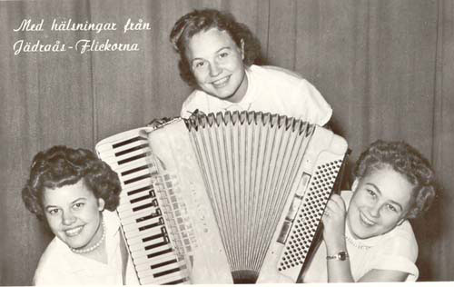
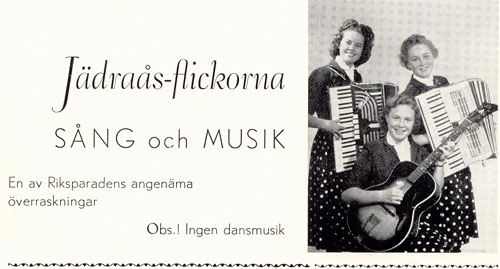

Jädraås-flickorna, beresta sångfåglar

Under 1950-talet var kanske Jädraås-flickorna Sveriges populäraste trio
med Ingrid Åslund på gitarr, Marit Strömberg och Elsa Hulth på
dragspel. Efter många och långa
förenings- och folkparksturnéer, framträdanden i Europa på både scen
och i radio så var kanske resan till Sovjet år 1955 höjdpunkten på
deras ”artistresa”.
Under augusti månad 1955 anordnade
Folkparkernas Artistförmedling den första svenska artistturnén till
Sovjetunionen med 19 artister, däribland Jädraås-
flickorna. 20 framträdanden gjordes
i Moskva där de första hölls i Gorkijparkens väldiga friluftsteater
med över 10 000 personer vid premiärkonserten. Sedan
blev det Leningrad med ett 10-tal framträdanden.
Jädraås-flickorna, de unga charmfulla flickorna, framförde mestadels svenska folkvisor som tog den ryska publiken med storm. Detta gjorde att konferencieren hade det svårt att presentera nästa artist när publiken ville genom handfasta applåder ha in flickorna på scenen igen och åter igen, fem till åtta gånger ibland 10 gånger innan nästa artist fick möjlighet att framföra sitt bidrag.
Varje konsert var uppdelad i två
avdelningar, i den första ingick Jädraås-
flickorna. Turnéledningen insåg snart hur populära flickorna var så
deras program utökades och ingick även i andraavdelningen.
Under tiden i Sovjet så hann flickorna med både film- och ljudinspelning, samt TV-program.
Det första artistutbytet med Sovjet,
numera Ryssland, blev en stor succé mycket tack vare Marit, Ingrid och
Elsas glada och trivsamma framträdanden och deras tolkning av den svenska
folkvisan. 